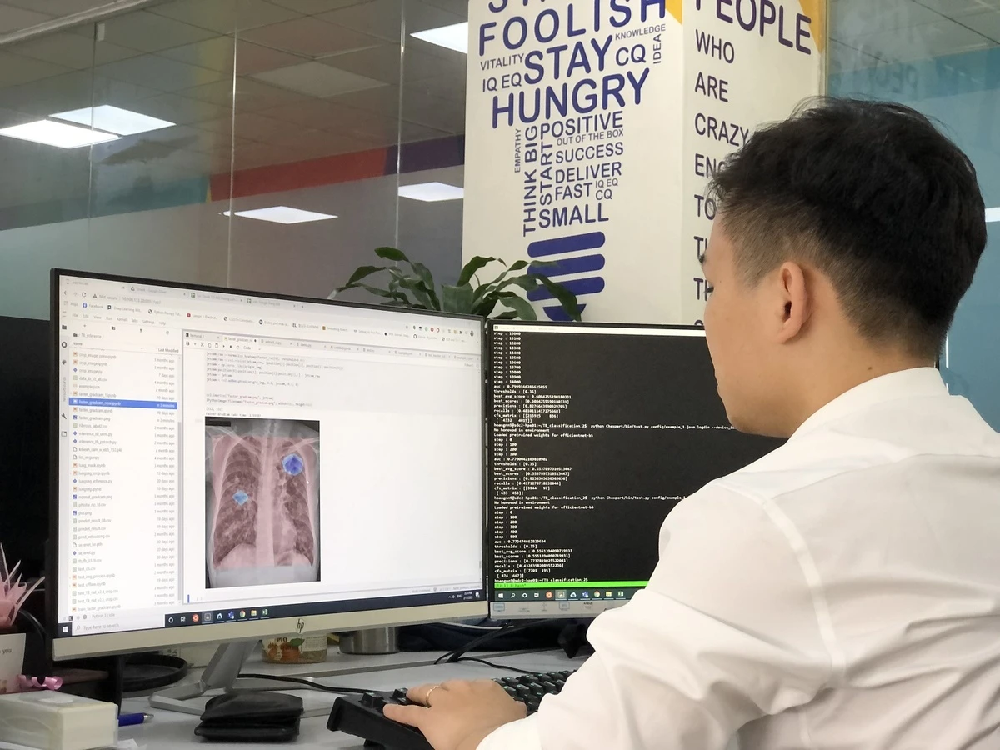

công nghệ
VinBrain (thuộc Tập đoàn Vingroup) là một trong những công ty tiên phong sử dụng thế hệ siêu máy tính NVIDIA DGX A100 để phát triển một cách hiệu quả và đột phá các sản phẩm AI. Hệ thống mới này đang hỗ trợ các chuyên gia của VinBrain phát triển hàng loạt dự án ứng dụng AI trong chăm sóc sức khỏe, thành phố thông minh và nhà thông minh...
DrAidlà phần mềm AI do Công ty VinBrain phát triển từ năm 2019, nhằm hỗ trợ chẩn đoán các bệnh về phổi, tim và xương dựa trên X-quang. DrAid đã hỗ trợ chẩn đoán 19 dấu hiệu bất thường và bệnh lý về tim, phổi, xương trong vòng 5 giây với độ chính xác trên 88%. Phần mềm này cũng tự động đưa ra báo cáo y tế có khoanh vùng, bản đồ nhiệt và đo kích thước chính xác tại vùng bất thường. Đồng thời, DrAid còn hỗ trợ chia sẻ kết quả chẩn đoán cho bệnh nhân hoặc bác sĩ thứ hai thông qua QR code hoặc đường link.
Trước diễn biến phức tạp của đại dịch, DrAid đã được tích hợp thêm chức năng hỗ trợ chẩn đoán, sàng lọc và đánh giá tiên lượng bệnh nhân phục vụ điều trị Covid-19. Phần mềm tự động đưa ra cảnh báo Covid-19, kể cả các trường hợp không có triệu chứng hoặc tổn thương phổi nhẹ.
DrAid có bộ dữ liệu lớn 1,3 triệu hình ảnh X-quang với hơn 275.000 hình ảnh đã được gán nhãn và bộ dữ liệu Covid-19 với 7.490 hình ảnh dương tính của bệnh nhân. Thông qua ứng dụng các công nghệ tiên tiến của AI như học sâu, VinBrain đang phát triển các giải pháp hỗ trợ bác sĩ chẩn đoán hình ảnh, phát hiện các dấu hiệu bệnh lý, bất thường một cách chính xác, nhất quán và nhanh hơn.
Chuyên gia AI của VinBrain đang sử dụng NVIDIA DGX A100 để đào tạo mô hình AI chẩn đoán bệnh lao.